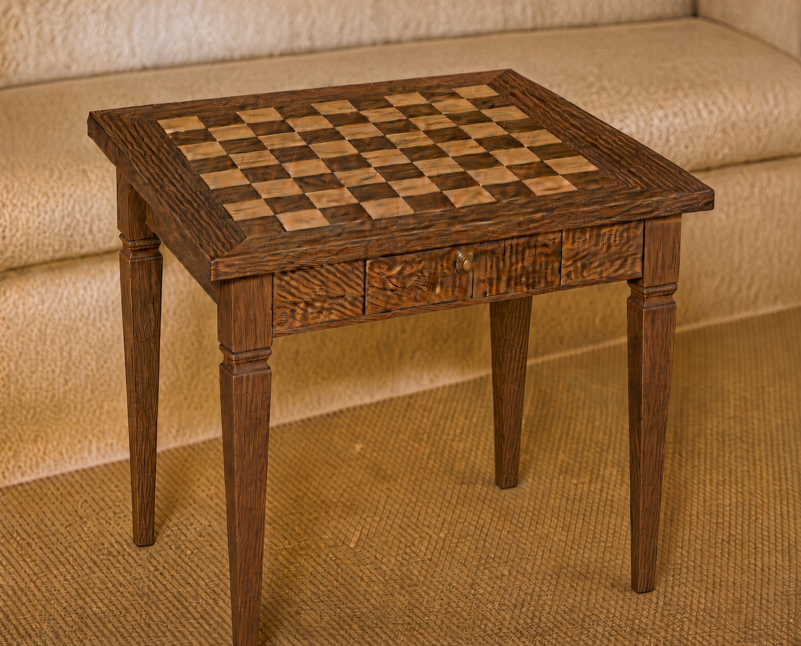
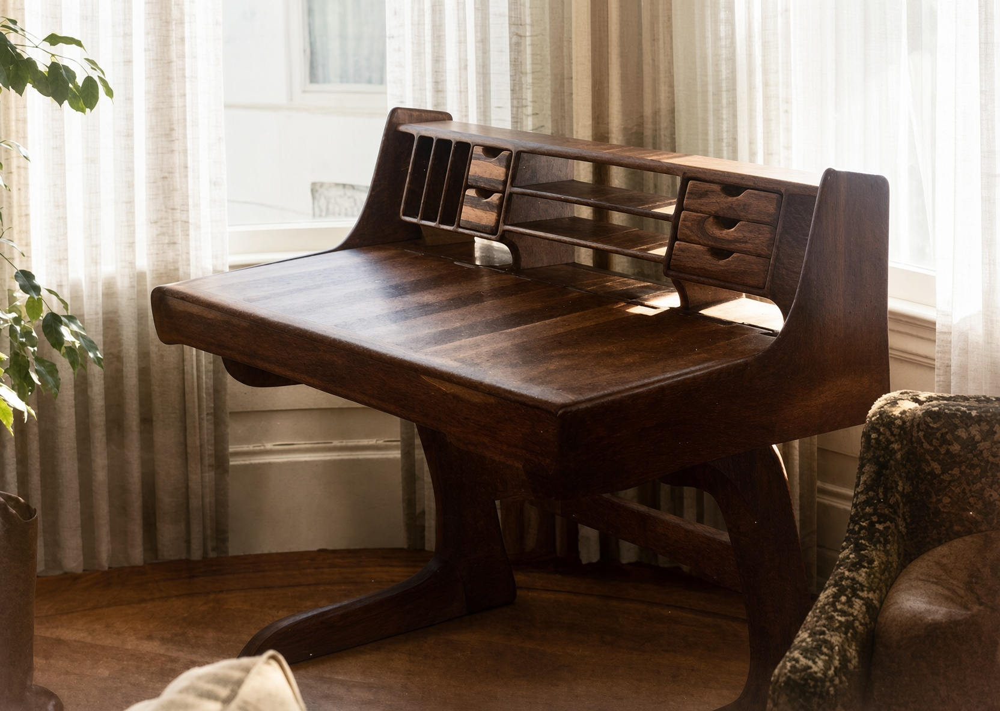

viGoArtes
art
He who works with his hands is a laborer.
He who works with his hands and his head is a craftsman.
He who works with his hands and his head and his heart is an artist.— Saint Francis of Assisi
Today is another day in which to love something beautiful into existence
— viGo
Ikebana’s unique wisdom is that no blossom, no plant, no branch is ever “ugly” or “unusable”; one has only to understand how to work with it and coax out its inherent perfection and its place in the larger context of the whole.
Professional design services are retired. The living work is art-creation as viGoArtes — ikebana, light sculpture, painting, fine furniture…….and whatever comes next!
See the evolving body of work on Instagram: @vigoartes_
origins
earliest work. chess table 1967. desk 1974.

